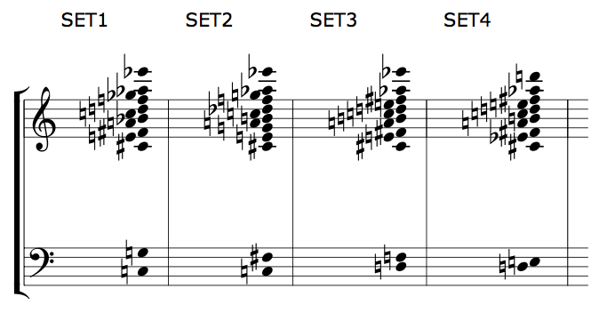
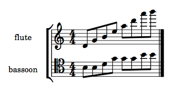
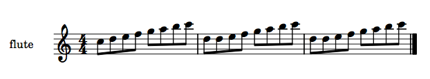
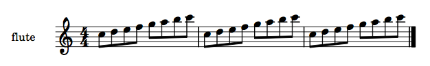
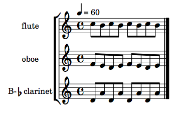
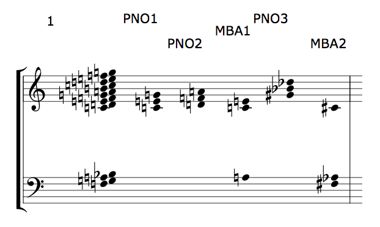
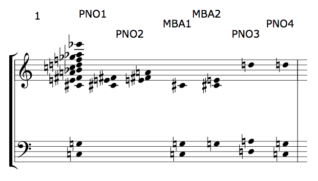
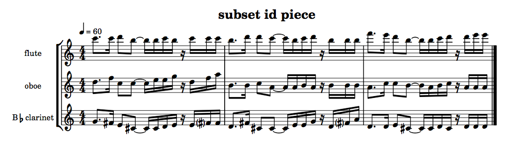

Pitches
+ Associated example files
Pitches in slippery chicken are governed by a combination of general guidelines determined by the user and an internal, automatic pitch-selection algorithm that assigns specific pitches to players based on these guidelines.
The user's direct control over pitch content lies primarily in the
definition of a palette of available pitch collections (sets
within the set-palette), a map of when these sets are used
within the piece (set-map), and palettes of linear pitch
contours (pitch-seq objects within
a pitch-seq-palette) that are defined for each
individual rthm-seq object in
the rthm-seq-palette.
A number of other optional keyword arguments to
the make-slippery-chicken function (which also correspond
to slots of the slippery-chicken class) allow for further
general control of pitch content, such as set-limits-high
and set-limits-low, fast-leap-threshold,
avoid-melodic-octaves etc. The full list of available
arguments can be found in the source code documentation for
the make-slippery-chicken
function.
This page provides information on set-related features and the use
of pitch-seq objects and
pitch-seq-palettes. It also provides an introduction to
the automatic pitch-selection algorithm that slippery chicken
uses internally for actual pitch placement. Separate documentation is
also available for note-names and
scales and chord functions.
set basics
+ set-palette
The user defines all of the possible sets of pitches for a
composition in the set-palette. Any number of sets can
be defined in any order within this palette. Each set is assigned an
ID, which can be a number, a symbol, or a string, with which it is
later referenced from within the set-map. The pitches of
a given set will be the only pitches available to all players of the
ensemble in any sequence of the set-map that is assigned
that set. Note that it is not necesssary to repeat the octave if it
hasn't changed from the previous note
:set-palette '((set1 ((c3 g cs4 e fs a bf c5 d f gf af ef6)))
(set2 ((c3 fs cs4 e g a b c5 df f g af ef6)))
(set3 ((d3 f cs4 e fs a b c5 d e fs af ef6)))
(set4 ((d3 e cs4 ef fs a b c5 d e fs af d6))))
|  |
The combination of the static set-palette material and
the curves defined in the pitch-seq-palette of each
given rthm-seq will determine the linear pitch
attributes of the music generated for each instrument. If a set
contains only a few pitches separated by large intervals, the players
will have either large leaps in their linear pitch material or many
consecutive repetitions of the same note.
NB: Because slippery chicken interprets many
two-item lists as nested lists, it will issue an error if the user
attempts to create a set with only two pitches. To get around this
error, the user may specify the keyword
argument :recurse-simple-data with the
value nil with two-pitch sets, e.g.:
:set-palette '(((1 ((gs4 bf4)))) :recurse-simple-data nil)
+ set-map
The set-map is where the sets are assigned to each of
the individual sequences of the piece. It is made up of a list of the
sections in the piece, each paired with a list that consists of one
set ID for each of the sequences in that section.
The set IDs can be assigned to the sequences in any order. They can
be repeated within the set-map as many times as the user
would like. Not all of the sets defined must be used in
the set-map. There must be the same number of sequences
in each section of the set-map as there are sequences in
each section of the rthm-seq-map.
The pitches in a given set are the only pitches available to the ensemble for the duration of that sequence.
:set-map '((1 (set1 set1 set1 set1 set1))
(2 (set2 set3 set2 set3 set2 set3 set3))
(3 (set3 set3 set4 set3 set4 set3 set4 set4 set3 set4 set4))
(4 (set4 set4 set1 set4 set1 set4 set1 set1 set1)))
This set-map, with the sets
defined in the set-palette section above, will result
in the following progression:
 |
As of version 1.07 a morph method exists for the
chord class (of which sets are a subclass). This means that
set-maps generated with, e.g., fibonacci-transitions
which return morph structures instead of plain
references, will morph two sets before using them in the
assignment of pitches to instruments. See robodoc
for more information.
As of version 1.09 there is a new slippery-chicken
class slot (and corresponding make-slippery-chicken
keyword argument), :transposition-curve, that over the
course of a whole piece describes a transposition that should be
applied to the sets used for the pitch selection routine. The
x-axis can have any arbitrary range: it will automatically be
stretched to match the number of sequences in the piece. The y-axis
should be semitone values; these may be positive or negative of
course. Interpolation will take place between y values, but
transposition will round to the nearest pitch in the current
scale. The default value for this curve is '(0 0 100 0) which means
of course no transposition will be applied.
pitch-seq basics
+ Understanding pitch-seq curves
slippery chicken automatically selects pitches from each
set of the set-map for each player in each sequence. The
linear contours of the pitches chosen for each player are governed
by pitch-seq curves. These are defined by the user
within the pitch-seq-palette of each
individual rthm-seq object of
the rthm-seq-palette, and are therefore only applied to
instances of that rthm-seq in the music generated.
The pitch-seq curves consist of numbers (both integers
and decimal numbers work), one for each
attacked rhythm (i.e. not for tied notes) of the
given rthm-seq object. For example:
:rthm-seq-palette '((1 ((((4 4) - e e e e - - e e e e -))
:pitch-seq-palette ((1 4 3 2 5 7 8 6)))))
Direction and relative size of intervals
The numbers chosen by the user for the pitch-seq can
span any arbitrary numerical range, including negative numbers. The
difference between two consecutive numbers in
the pitch-seq indicates the direction and relative size
of the linear interval between the corresponding two pitches selected
by slippery chicken. Thus, a sequence of
(1 2 13 4 3) indicates a linear pitch contour that has
one small interval at the beginning and end, with a larger leap
upwards and back down again in the middle.
Actual pitches selected depend on range and other factors
The actual pitches chosen from the current set
by slippery chicken for each curve depend on a number of
factors (see the section on how slippery chicken selects
pitches below). One of these factors is the given instrument's
range. Each pitch-seq curve is only applied to those
pitches within the current set that fall within the
instrument's range, as defined in the instrument-palette
being used for the piece. If there are fewer pitches within the
current set that fall within the instrument's range than
there are different number values used to define
the pitch-seq curve, then some of the pitches will be
repeated.
As an example, the following application of the
same pitch-seq with 8 different number to both the
flute and the bassoon parts, with a pitch set that has
relatively few low notes, results in the bassoon line having a
narrower range and a number of repeated pitches:
:set-palette '((1 ((b3 d4 g4 b4 e5 a5 d6 a6 b6))))
:rthm-seq-palette '((1 ((((4 4) - e e e e - - e e e e -))
:pitch-seq-palette ((1 2 3 4 5 6 7 8)))))
:rthm-seq-map '((1 ((fl (1))
(bn (1)))))
|  |
Defining only one pitch-seq in a pitch-seq-palette
If only one pitch-seq is defined for a
given rthm-seq object, every player playing that
rthm-seq will always have the same linear pitch contour
whenever that rthm-seq appears in the piece. For
information on the use of multiple pitch-seq curves, see
the section on multiple curves in the same
pitch-seq-palette below.
Indicating chords in the pitch-seq curve
Numbers in additional parentheses within a pitch-seq
indicate chords:
:rthm-seq-palette '((1 ((((4 4) - e e e e - - e e e e -))
:pitch-seq-palette ((1 (4) (3) 2 5 (7) 8 6)))))
If the given instrument is not capable of playing chords, as
indicated by its definition in the instrument-palette
being used for the piece, then single pitches are selected
by slippery chicken instead. More information on topics
related to chords can be found on the chord
functions page.
Avoiding melodic octaves
By default, slippery chicken will avoid melodic octaves
when selecting pitches for the players. This feature can be turned
off by setting the :avoid-melodic-octaves slot
to NIL.
Default output:
:set-palette '((1 ((c5 d5 e5 f5 g5 a5 b5 c6))))
:set-map '((1 (1 1 1)))
:rthm-seq-palette '((1 ((((4 4) - e e e e - - e e e e -))
:pitch-seq-palette (1 2 3 4 5 6 7 8))))
:rthm-seq-map '((1 ((fl (1 1 1)))))
|  |
Setting :avoid-melodic-octaves to NIL:
:set-palette '((1 ((c5 d5 e5 f5 g5 a5 b5 c6))))
:set-map '((1 (1 1 1)))
:rthm-seq-palette '((1 ((((4 4) - e e e e - - e e e e -))
:pitch-seq-palette (1 2 3 4 5 6 7 8))))
:avoid-melodic-octaves nil
:rthm-seq-map '((1 ((fl (1 1 1)))))
|  |
+ Multiple curves in the same :pitch-seq-palette
There can be as many separate pitch-seq curves in
each pitch-seq-palette as the user
likes. A pitch-seq-palette with more than
one pitch-seq will produce multiple linear pitch curves
for the same rhythmic material. Depending on the structure of
the rthm-seq-map, these different curves may be played
by different players at the same time or by the same player at
different times, or both.
slippery chicken applies each different
pitch-seq consecutively starting at the top of the
ensemble and moving downwards through the players. Thus, if three
players are assigned within the rthm-seq-map to play
the same rthm-seq at the same time, the
first pitch-seq curve is given to the player that
appears first in the ensemble list, the second to the
next player in the ensemble list, and the third to the
player after that.
For example, this very brief slippery-chicken piece has
three players and defines three different pitch-seq
curves with distinct contours within the
one pitch-seq-palette of the one rthm-seq
in the rthm-seq-palette. It then constructs the
composition using a rthm-seq-map in which all three
players play the same rthm-seq at the same time, only
once:
(let* ((multi-ps
(make-slippery-chicken
'+multi-ps+
:title "Multiple pitch-seqs"
:ensemble '(((fl (flute :midi-channel 1))
(ob (oboe :midi-channel 2))
(cl (b-flat-clarinet :midi-channel 3))))
:tempo-map '((1 (q 60)))
:set-palette '((1 ((c4 d4 e4 f4 g4 a4 b4 c5))))
:set-map '((1 (1)))
:rthm-seq-palette '((1 ((((4 4) - e e e e - - e e e e -))
:pitch-seq-palette ((8 7 8 7 8 7 8 7)
(5 4 3 4 5 4 3 4)
(1 2 1 2 1 2 1 2)))))
:rthm-seq-map '((1 ((fl (1))
(ob (1))
(cl (1))))))))
(write-lp-data-for-all multi-ps))
The resulting score fragment shows how the
different pitch-seq curves of the
above pitch-seq-palette determine the linear contours
for each player. It also demonstrates the distinction between
pitch contours and actual pitch selection in
slippery chicken, as the numbers do not represent pitches,
but directionality and relative distance within the linear pitch
motion. Thus, the clarinet maintains the contour indicated by
1 2 1 2..., even though its 2 is higher in
pitch than the oboe's 4. (More detail on this can be
found in the section on how slippery chicken selects
pitches below.)
|  |
Assigning a pitch-seq to specific instruments
There's also a way to assign a pitch-seq to an arbitrary number of instruments (as distinct from players). E.g.
((1 2 1 1 3)
((1 3 2 1 5) violin flute)
(1 3 5 6 7))
In this case, such a pitch-seq will only be used for the named instruments. This implies that those instruments will use only a pitch-seq that they're named in, and that other instruments will only use a pitch-seq for which there are no named instruments.
Advanced pitch-seq and set topics
+ How slippery chicken selects pitches
slippery chicken selects the specific pitches for each
player in a given sequence one player after the next. By default, it
chooses pitches for the players in the order in which they appear in
the ensemble list. The user can specify a different
order using the :instruments-hierarchy keyword argument
of the make-slippery-chicken function. When choosing
pitches for players, slippery chicken takes into account
which pitches have already been assigned to other players playing at
the same time, so the order in which it processes the players is
important for pitch allocation.
Once the order is determined, slippery chicken follows
specific steps to select pitches from the current set for each
instrument currently being played by each of the players. If you want
to see printed details in the Lisp interpreter of which pitches are
chosen from the current set using the current pitch sequence and
instrument, be sure to put this code before your call to
make-slippery-chicken:
(set-sc-config 'verbose-pitch-selection t)
- slippery chicken first limits the current set to only pitches that fall within the instrument's range.
- It then removes any pitches that have already been allocated to other instruments.
- If the ID of the player, or failing that the
subset-idslot of the instrument, matches the ID of asubsetof the current set object, the pitches are further limited to those common to both the specifiedsubsetand the pitches remaining from step 2. - If the ratio of the number of pitches now available to the
number of different numerical values in the
pitch-seqis less than thepitch-seq-index-scaler-minslot of theslippery-chickenobject (0.5 by default), slippery chicken will add pitches that have already been allocated to other instruments until this ratio is met or exceeded. (The user can change the value of thepitch-seq-index-scaler-minby specifying the keyword argument of the same name within the call to themake-slippery-chickenfunction). This ratio—which may indeed be greater than one—is then used to multiply the numbers in thepitch-seq(which are subsequently rounded) to obtain the indices for getting the pitches for each number in thepitch-seqfrom the list of available pitches. In this case, the lowest number in thepitch-seqwill be assigned to the lowest of the available pitches. - If after the first three steps there are enough pitches to cover
the different numbers in the
pitch-seq, the pitch assigned to the lowest number in thepitch-seqwill depend on the value of theprefers-notesslot of the instrument definition:- If the
prefers-notesslot has been set tohigh, the highest number in thepitch-seqwill be assigned to the highest of the available pitches. - If the
prefers-notesslot has been set tolow, the lowest number in thepitch-seqwill be assigned to the lowest of the available pitches. - If this slot has not been set (defaults to
NIL), the range of pitches assigned to the numbers of thepitch-seqwill correspond to the middle of the available pitches, with two exceptions:- If the lowest
number in the
pitch-seqis 5 or higher, this will have the same effect as theprefers-notesslot being set tohigh. - If the lowest number in the
pitch-seqis 1, this will have the same effect as theprefers-notesslot being set tolow.
(set-sc-config 'pitch-seq-lowest-equals-prefers-high 6)(set-sc-config 'pitch-seq-lowest-equals-prefers-low 0) - If the lowest
number in the
- If the
- If at this point there are no available pitches, the function
will trigger an error and exit (however, see NB below). This could happen, for example, if
the
set-limits-highandset-limits-lowtake the available pitches outside of the instrument's range.
NB: By default, slippery chicken will also
prevent melodic octaves from being assigned to a player. Setting
the slippery-chicken
object's avoid-melodic-octaves slot to NIL
will disable this feature, as described in the understanding pitch-seq curves
section above.
NB: Since version 1.10, if no pitches are available for
the current instrument to choose from the set, it is possible to avoid
the error and automatically be allocated a rest sequence instead by
placing/evaluating the following before your call to
make-slippery-chicken:
(set-sc-config 'pitch-seq-no-pitches-error nil)
Changing pitches post-generation
There are ways to narrow the set of pitches available to an player
prior to generating the data of the slippery-chicken
object, such as by using the set-limits-high
and set-limits-low keywords of
the make-slippery-chicken function (see
below), or through the use
of subsets (see below, and the page
on tailoring instrument
definitions).
However, if the user would like to change the specific pitches of
just a few notes after a piece has been generated, a number of
post-generation editing methods are available for modifying the data
of existing slippery-chicken objects. The
post-generation data-editing method change-pitch, for
example, allows the user to change the pitch of a single specific
note, where the new pitch is not required to be a member of the
current set. See the page
on post-generation data editing
for more detail.
Since slippery chicken can also be used to produce MIDI
files from its data, importing these into notation software such as
Finale, Sibelius, or MuseScore is also always an option. With a bit
of searching, the corresponding pitch values can also be found and
modified in any LilyPond files created. (Some versions of LilyPond
also include a point-and-click feature by which clicking on a note in
the PDF output jumps automatically to that note in
the .ly file.)
+ set-limits-high and set-limits-low
In addition to the definition of the highest and lowest pitches of
an instrument's absolute range (as defined in the
individual instrument objects of
the instrument-palette being used for a given piece),
the user can further constrain the pitches assigned to a given
instrument to sub-ranges for any number of consecutive sequences of a
piece. This is done using the keyword
arguments :set-limits-high
and :set-limits-low with a list of 2-element lists, in
the format seen here:
:set-limits-high '((cl (0 c6 50 c5 100 c6))
(vc (0 g4 50 g3 100 g4))
(cb (0 f3 50 f2 100 f3)))
The first element of each 2-element list is the ID assigned by the
user to the given player within
the ensemble block of
the make-slippery-chicken function (and not the ID of
the instrument within the instrument-palette). If the
symbol all is given here, the subsequent list of
breakpoint pairs will apply to all instruments, further constraining
the high and low limits of the individual curves if there is an
overlap, thus allowing tessitura shaping for the whole
ensemble over the course of the piece.
The second element of each 2-element list is a series of breakpoint pairs, each consisting of an x-axis number followed by either a note-name symbol or a MIDI note number. The pitch indicators refer to sounding pitches, not written (in the case of a transposing instrument). The x-axis range is arbitrary and will be scaled to fit the number of sequences in the entire piece. Since the x-axis numbers in this example span from 0 to 100, if the given piece consisted of 100 sequences, the second x-axis value here of 50 would indicate the 50th sequence in the piece.
slippery chicken interpolates a gradual curve between the
values associated with each x-axis number. In the above example the
upper range of the instrument associated with player cl
would be limited to C6 at the opening, gradually being lowered to C5
by the middle sequence, and gradually increasing to C6 again by the
last sequence of the piece.
NB: Since the operations behind
the set-limits- slots are based on interpolation, at
least two pairs of breakpoint are
required. Correspondingly, set-limits- values cannot be
used when generating a musical fragment that has only one sequence in
the rhtm-seq-map. Attempting to do so will produce
a division by zero error.
NB: If a single capping of an instrument's pitch range for
an entire piece is required rather than a curve for range limits that
change over the piece, another option for achieving this is to modify
the highest- or lowest-written or
-sounding values of the given instrument
object instead. See the documentation
on changing instrument attributes
temporarily for more on this.
subsets and related-sets
+ Adding subsets and related-sets to a set
Each set in a set-palette can also
contain subsets and related-sets. These
will only be used during automatic pitch selection if there is a
corresponding value set as the subset-id in the
definition of an instrument object (see the page
on tailoring instrument definitions
and the section on limiting an instrument's pitches
using subset-id below). They can also be very useful when writing
user-defined functions, such as for chord selection (see the page
on chord functions for more
detail).
The primary difference between subsets
and related-sets is that all pitches specified in
the subsets slot must also be members of the primary set
in the set-palette, whereas
the related-sets slot can contain any pitch, whether
part of the primary set or not.
When a subset is specified with pitches that are not
members of the primary set, slippery chicken
will produce an error:
sc-set::check-subsets: Note C4 given in subset MBA1 of set SET1 is not part of the main set. [Condition of type SIMPLE-ERROR]
Both subsets and related-sets can be
entered as simple or nested key-data pairs, whereby the nested
approach must be reflected in an additional set of
parentheses. Simple key-data pairs would look like this:
:set-palette '((1 ((f3 g3 a3 bf3 c4 d4 e4 f4 g4 a4 b4 c5 d5 e5 f5 g5)
:subsets ((pno1 (c4 e4 g4))
(pno2 (d4 f4 a4))
(mba1 (a3 c4 e4)))
:related-sets ((pno3 (gs4 bf4 df5))
(mba2 (fs3 af3 cs4))))))
|  |
Nested subsets and related-sets would be
entered such:
:set-palette '((1 ((c3 g3 cs4 e4 fs4 a4 bf4 c5 d5 f5 gf5 af5 ef6)
:subsets ((piano ((pno1 (cs4 e4 fs4))
(pno2 (e4 fs4 a4))))
(marimba ((mba1 (c3 g3 cs4))
(mba2 (g3 cs4 e4)))))
:related-sets ((piano ((pno3 (d3 a3 d5))
(pno4 (c3 g3 d5))))))))
|  |
+ Limiting an instrument's pitches using subset-id
The subset-id slot of an instrument object
will cause slippery chicken to automatically limit an
instrument's pitches to the pitches in the
corresponding subset of the current set. This applies to
both linear pitch contours and to any chords made (see the section
on chord functions and set-palette subsets of
the chords page for more on restricting
only the chords for a player to subsets without limiting the linear
pitch contours for that player's current instrument). If there is
no subset in the current set with a matching ID, the
default
rules for pitch
selection
apply.
This example sets the subset-id slots of
the flute, oboe,
and b-flat-clarinet instruments that are contained in
the +slippery-chicken-standard-instrument-palette+
to flute-notes, oboe-notes,
and clarinet-notes, and creates corresponding subsets
with the same ID in the set:
(set-slot 'subset-id 'flute-notes 'flute
+slippery-chicken-standard-instrument-palette+)
(set-slot 'subset-id 'oboe-notes 'oboe
+slippery-chicken-standard-instrument-palette+)
(set-slot 'subset-id 'clarinet-notes 'b-flat-clarinet
+slippery-chicken-standard-instrument-palette+)
(let* ((subset-id-piece
(make-slippery-chicken
'+subset-id-piece+
:title "subset id piece"
:ensemble '(((fl (flute :midi-channel 1))
(ob (oboe :midi-channel 2))
(cl (b-flat-clarinet :midi-channel 3))))
:set-palette '((1 ((b3 c4 d4 e4 f4 g4 a4 b4 c5 d5 e5 f5 g5 a5 b5 c6
d6 e6 f6 g6 a6 b6)
:subsets ((flute-notes (b5 c6 d6 e6 f6 g6 a6 b6))
(oboe-notes (a4 b4 c5 d5 e5 f5 g5 a5))
(clarinet-notes (b3 c4 d4 e4 f4 g4))))))
:set-map '((1 (1 1 1)))
:rthm-seq-palette '((1 ((((4 4) - e. s - - e e -
- +s s s s - (s) - s s s - ))
:pitch-seq-palette ((2 2 3 1 1 2 1 2 2 2)
(6 8 5 5 7 7 9 6 8 10)
(5 4 3 1 1 2 3 3 4 4)
(1 3 3 2 1 2 3 1 1 1)))))
:rthm-seq-map '((1 ((fl (1 1 1))
(ob (1 1 1))
(cl (1 1 1))))))))
(write-lp-data-for-all subset-id-piece :base-path "/tmp/"))
When the piece is generated, each part will only contain pitches
from the corresponding subset:
NB From version 1.09 you can easily set the subset-id to be the same as the
ID of each instrument in an instrument-palette: e.g. (auto-set-subset-id
+slippery-chicken-standard-instrument-palette+)
|  |